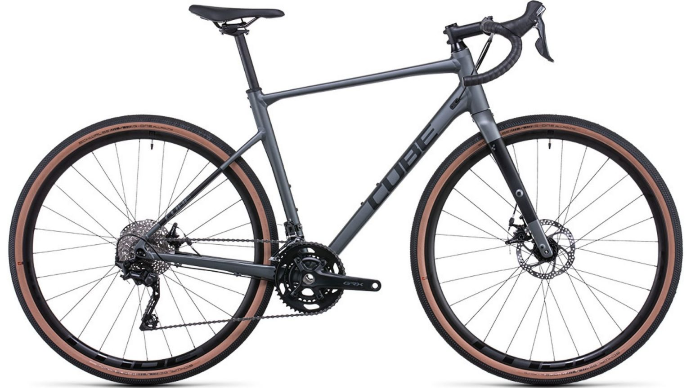
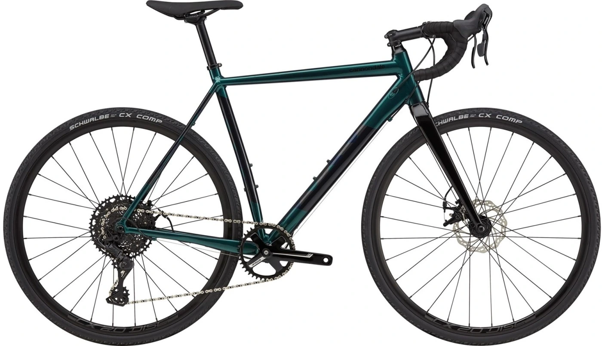

Gravel Bikes
-
Cube Nuroad Pro 2022
Specifications: Frame: Aluminium 6061 T6 Superlite, Gravel Comfort Geometry Weight: 10.5 kg Rear Derailleur: Shimano GRX RD-RX400, 10-Speed Front Derailleur: Shimano GRX Shifters: Shimano GRX Price: Check Me out Here! -
Giant Revolt Advanced 3 2022

Specifications: Frame: Advanced-Grade Composite Weight: N/A Depends on the set up from the shop Rear Derailleur: Shimano GRX RX-400 Front Derailleur: Shimano GRX RX-400 Shifters: Shimano GRX RX-400X Price: Check Me out Here! -
Cannondale CAADX 2 Advent X Cyclocross Bike 2021
Specifications: Frame: SmartForm C2 Alloy, 12x142mm thru-axle Weight: N/A Rear Derailleur: microSHIFT Advent X Front Derailleur: N/A Shifters: microSHIFT Advent X, 10-speed Price: Check Me out Here!
Mountain Bikes
-
Giant Talon 2 2022

Specifications: Frame: ALUXX-Grade Aluminium Weight: N/A Depends on the set up from the shop Rear Derailleur: Shimano Acera Front Derailleur: Shimano FD-M315 Shifters: Shimano SL-M315 Price: Check Me out Here! -
Cube Stereo 120 Pro 2022

Specifications: Frame: HPA Advanced Hydroform Weight: 14.8 kg Rear Derailleur: Sram NX Eagle™, 12-Speed Front Derailleur: Sram SX Eagle™ Trigger Shifters: Sram X1 1000 Eagle™ DUB 30T Price: Check Me out Here! -
Giant Reign E+0 2022

Specifications: Frame: ALUXX SL-grade aluminium, 160mm Weight: N/A Rear Derailleur: SRAM XO1 Eagle, 12-Speed Front Derailleur: N/A Shifters: SRAM XO1 EagleT Price: Check Me out Here!